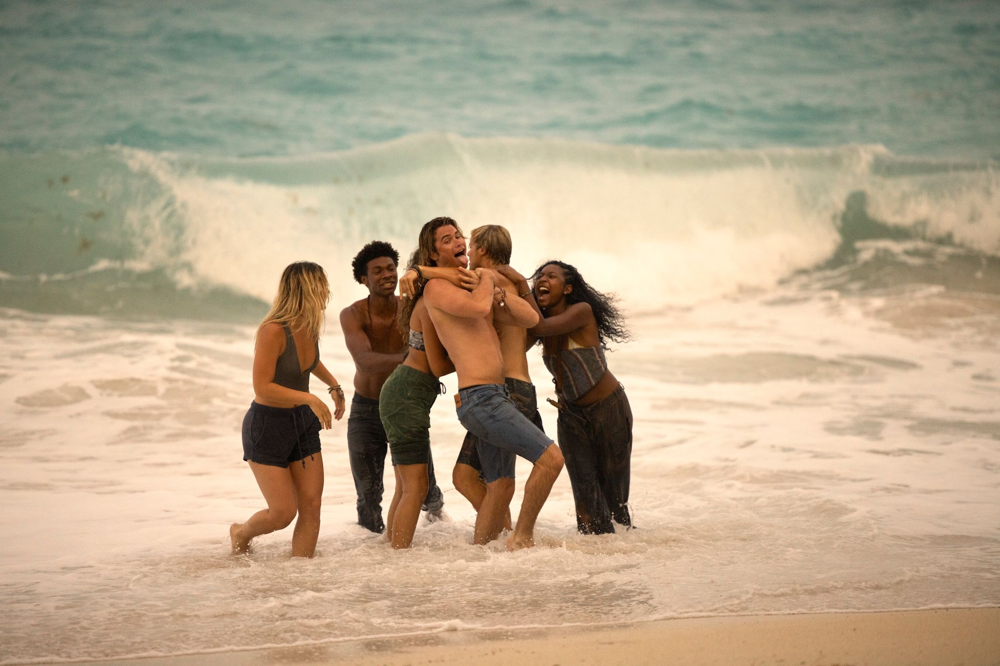

Outer Banks, også kalt for OBX, er en Netflix original serie som kan ta lang tid å se på. Hvis du vil vite hva hypen er for, men har ikke tid til å se på, er du på riktig sted. Bruk denne nettsiden på egen risiko, forlat for å unngå spoilers.
Kort fortalt, handler Outer Banks om et øy i North Carolina, Usa, som heter Outer Banks. Det fins to deler av øyen, "The Cut", hvor de fattige, også kalt for "Pogues" holder til og "Figure 8", hvor de rike, også kalt for "Kooks" holder til. To stammer, en øy. Vi møter en vennegruppe av Pogues, Kiara Carrera (Kie), John Booker Routledge (John B, JB), Pope Heyward og JJ Maybank (J, Jayj). Kiara er egentlig Kook, men hun velger å være Pogue siden livet som Kook er ganske kjedelig for henne. Utover serien jakter de på skatter, for å nettopp komme seg ut av fattigheten. Serien er også pakket av romanse og hvem noen av disse vennene ender opp med er ganske uforventet. Men, ikke alle vil at de skall finne skattene. Hva skjer nå?
